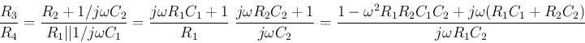
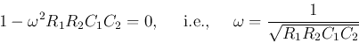
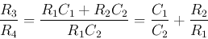
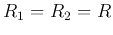
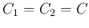
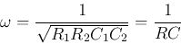
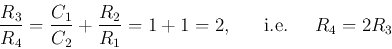

Next: Wien bridge oscillator
Up: wien
Previous: Twin-T filter
The Wien bridge is a particular type of the Wheatstone bridge of which
two of the four arms are composed of a capacitor as well as a resistor
in parallel and series:
For this bridge to balance, the ratios of the left and right branches
should be the same:

For the ratio on the right-hand side to be the same as that on the
left-hand side, it needs to be real, i.e.,

and the equation above becomes

In particular, if  and , we have:

and

Ruye Wang
2015-11-29